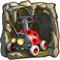

Получено: файл; исходный URL. Изображение из индекса серии, загружено без перекодирования; точное соответствие игровому экрану и авторство не установлены. Идентичность файлов разных хостов не проверена. Страница: источник.

Тайное ущелье — Звёздный урожай 2
браузерная игра; сеть и версия требуют сверки- Тип
- Задание
- Версия и дата
- браузерная игра; сеть и версия требуют сверки
Данные по источнику · браузерная игра; платформа не уточнена · Дату см. в URL отдельной статьи; дата создания и поздней правки не подтверждена
Предварительно: Фанатский источник; текст статьи может содержать ошибки, поздние изменения и отличия между версиями.. Требуется сверка.
- Порядок
- 10 из 11 по индексу серии.
- Сюжет
- В Тайном ущелье Зомби сможет выращивать новые загадочные растения, используя Железные семечки.
- Цели
- 1. Закончи собирать Заводного жука. Количество - 1 . Нельзя пропустить. | 2. Отправляйся в Тайное ущелье . Количество - 1 . Нельзя пропустить. | 3. Оставайся один день в Тайном ущелье. Количество - 24 часа . Пропустить - 15
- Награда
- 3 Бозон Хиггса
- Время
- У задания «Серебряная шахта» статья имеет дату 2015 в URL, но индекс относит его к линейке 2016 года; это не устанавливает дату создания или правки страницы. Если цена пропуска не показана, нельзя заключать, что пропуск невозможен.
Связанные сущности
- Жук — Звёздный урожай 2 — предыдущее задание
- Невиданная ферма — Звёздный урожай 2 — следующее задание
- Тайное ущелье — локация или постройка задания
- Жук — Звёздный урожай 2 — следующее задание
- Невиданная ферма — Звёздный урожай 2 — предыдущее задание